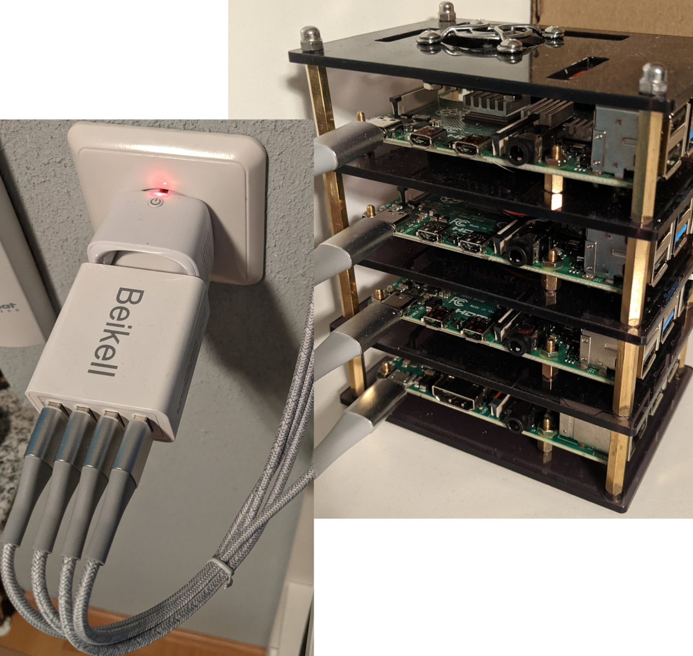

Switch home assistant entity via command-line
The last few days we paused on the journey, doing real-world things involving a guitar and some frustration. Tonight, there was an idea I wanted to follow up on: when I cobbled together my Raspi k8s cluster, I grabbed a zigbee power switch I had lying around, to be able to switch the entire cluster on or off easily.

With that I can switch the cluster with a physical button, or via the web UI of my home assistant installation (or a widget on my smartphone, etc pp). But I was thinking that I’d also like a way to do this switching from the command line of my computer. When the mood takes me, I’m going to be fooling around in a shell anyways, so a shell command would be much more seamless than going via the HA lovelace dashboard!
API first
As there’s an integration for homeassistant for anything and everything, I set out to look for an extension to make device switching available via REST API. Immediately I found documentation for various REST integrations of home assistant, for allowing switching of GPIO pins… or integrating other REST-style APIs as sensors/switches into HA. Hm. I must be missing something fundamental.
API, the second
And I was! Turns out the functionality I’m looking for is actually built into home assistant, just requires enabling by putting api: as a top-level entry into the HA configuration.yml.
Restart home assistant and run curl against a test endpoint: curl 192.168.0.x:8123/api/states, which gets us a ‘not authorized’ response. Good - there’s something there, then.
The excellent home assistant documentation mentions that we need to use an access token for this, so we do what’s necessary - e’voila.
Making the sights pretty
The home assistant API is up and accessible, so let’s use it. For now I’m only interested in switching one entity’s state - to get started I want three straightforward shell scripts: get state, switch on, switch off
Home assistant docs give us all we need for this, and I’m going to use curl to perform the http calls. However, the naked curl command is either very verbose (in case of the GET statement), or too silent (for the POST actions) - I want some friendly feedback!
GET switch state
For the GET state case, there is a very nice command line tool to work with json data for filtering, pretty-printing and more: jq. Which I didn’t know about until today, so that’s a win right there! Using jq, my get-state script looks like this:
#!/bin/bash
curl -s -X GET \
-H "Authorization: Bearer `cat api.token`" \
-H "Content-Type: application/json" \
http://192.168.0.10:8123/api/states/switch.power_smartplug_1 \
| jq '.state?'
Quite simple I’d say - after some playing around, I settled on a jq filter that reduces the curl output to just the value of the state property returned by the GET call: if the switch is off, the command will simply give us an "off". Nice, works for me!
POST to change switch state
When POSTing to the home assistant endpoint to switch power on or off, normally curl will just give us the (empty) body returned by the http request. That is not a lot - I want to see the http response code at least. There are many ways to skin this cat - after playing around with some options the internet offered, I decided to go with this:
#!/bin/bash
curl -is -X POST \
-H "Authorization: Bearer `cat api.token`" \
-H "Content-Type: application/json" \
-d '{"entity_id": "switch.power_smartplug_1"}' \
http://192.168.0.10:8123/api/services/switch/turn_on \
| head -n1
the -i and -s switches tell curl to show http result information, but be silent otherwise. This will get us five lines of info about the http response - the http status code with a nice String representation (HTTP/1.1 200 OK), plus content-type, -length, date etc. That is nice but I’d rather just have the first line (the http status code). This can be done by piping the entire thing through the head command, telling it to just return the first line it’s seeing (-n1).
Settling down for the day
That’s it, actually! We have three simple scripts that get us the cluster status, and can turn it on and off (modifying the POST script above to turn the cluster off is left as an exercise to the reader ;-) ). There might be follow-on ideas in the future, but for now I’m at the end of this little detour.
Waymarks
- main takeaway from today is the
jqtool - got some more knowledge about using curl
- much happiness with home assistant! I love that system more each time I add something to it
- added an image to this post, first time; figured out how to do sizing in jekyll/markdown